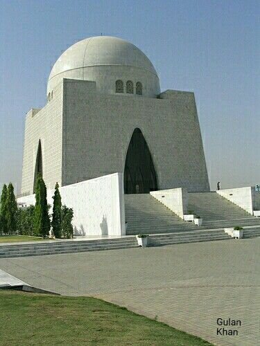
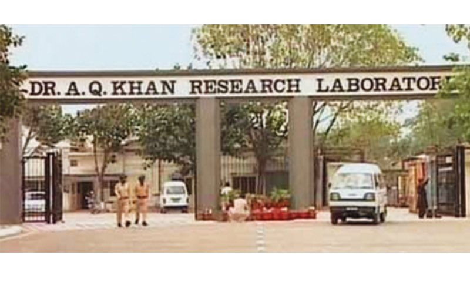
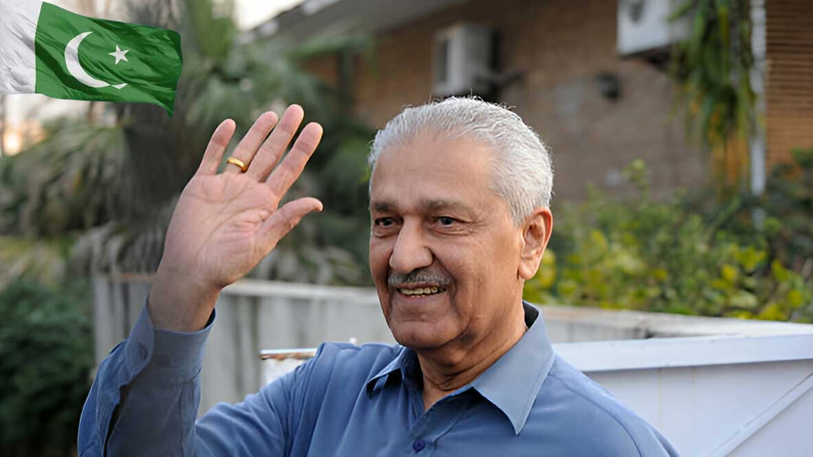

Journey Timeline
1936
Born in Bhopal, India
Born on April 1, 1936 in British India
1952
Migration to Pakistan
Moved to Pakistan after partition

1976
Founded KRL
Established Khan Research Laboratories

1998
Nuclear Tests
Chagai nuclear tests on May 28, 1998

2021
Passed Away
Died on October 10, 2021 in Islamabad
